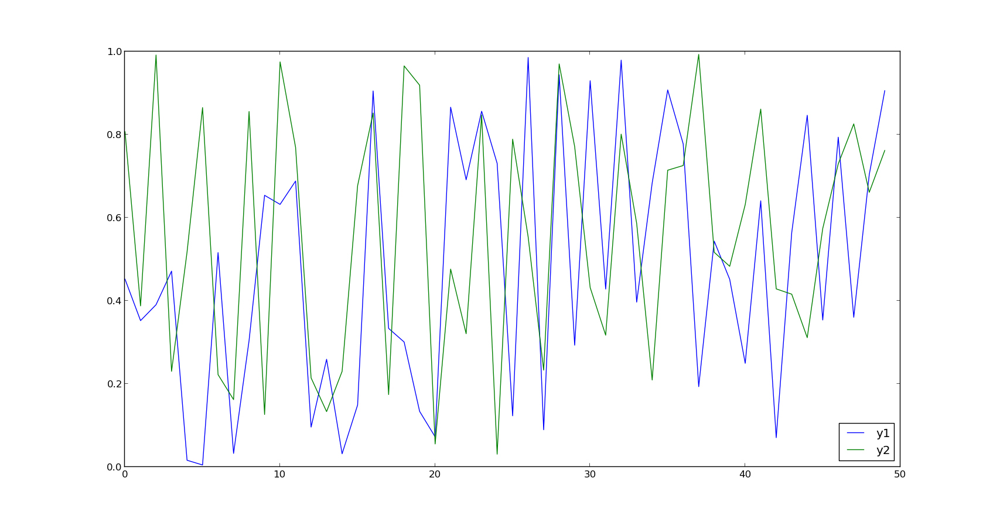
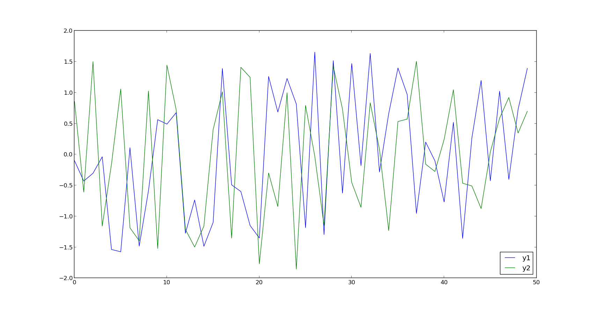
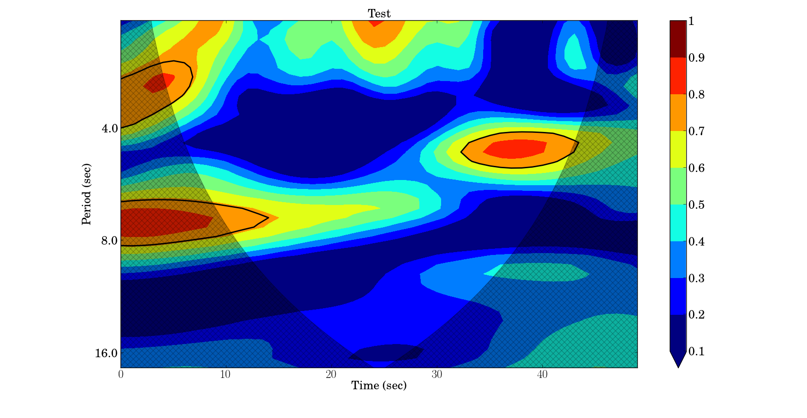
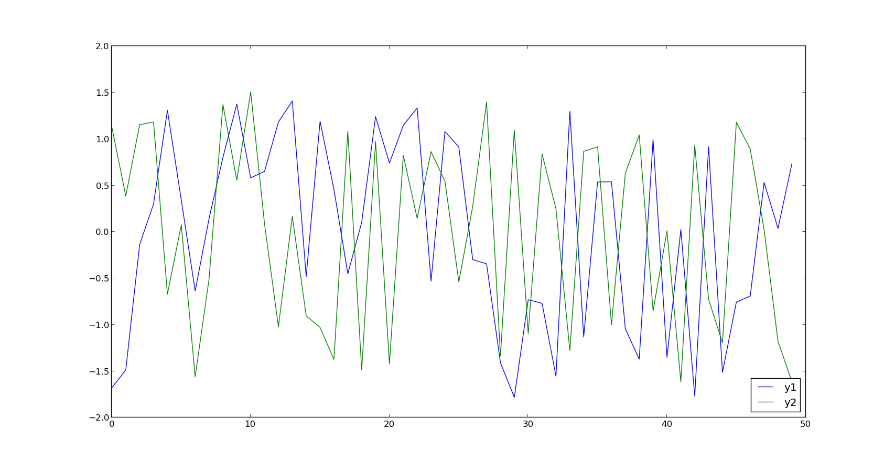
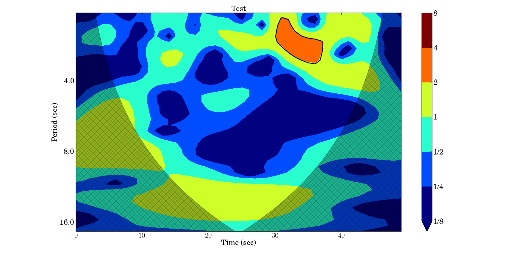
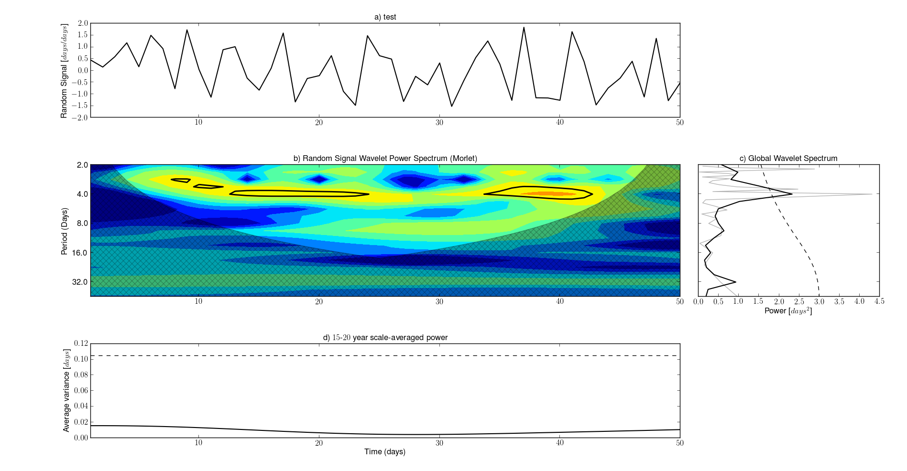

Python Interface for Wavelet Analysis
This project is maintained by duducosmos
Python programming Interface for Wavelet Analysis
DISCLAIMER
This module is a Python programming interface for the the matlab package for wavelet,
cross-wavelet and coherence-wavelet analysis provided by
Aslak Grinsted, John C. Moore and Svetlana Jevrejeva.
http://noc.ac.uk/using-science/crosswavelet-wavelet-coherence
This software may be used, copied, or redistributed as long as it
is not sold and this copyright notice is reproduced on each copy
made. This routine is provided as is without any express or implied
warranties whatsoever.
Part of the code are originally from the project of kPyWavelet
It is necessary to have gnuoctave installed in your machine Gnu Octave: http://www.gnu.org/software/octave/ (sudo apt-get install octave)
$ python setup.py install
Eduardo S. Pereira. Email: pereira.somoza@gmail.com
Regla D. Somoza. Email: duthit@gmail.com
Initialization of the piwavelet class
>> import numpy as np
>> from piwavelet import piwavelet
Given tow signal, with zero mean, to start the wavelet coherence analysis, it is necessary to call the wcoherence (Wavelet Coherence) class:
>> mycoherence = piwavelet.wcoherence(x,y)
>> Rsq,period,scale,coi,sig95=mycoherence()
The returned values are:
| Rsq | Coherence Wavelet |
| period | a vector of "Fourier" periods associated with Wxy |
| scale | a vector of wavelet scales associated with Wxy |
| coi | the cone of influence |
| sig95 | Significance |
Plot wavelet coherence of the signals x,y.
>> mycoherence = piwavelet.wcoherence(x,y)
>> mycoherence.plot(t = time, title='My Title',units='year')
Parameters :
| Key | Mean |
| title (string) | Title of the Plot |
| t | array with time |
| units: (string) | Units of the period and time (e.g. 'days') |
Optional parameters
| Key | Default | Mean |
| gray | (boolean) True for gray map | False |
| levels | List with significance level that will be showed in the plot | [0.1,0.2,0.3,0.4,0.5,0.6,0.7,0.8,0.9,1.0] |
| labels | List with the Label of significance level that will be apper into the color bar. If not defined, the levels list is used instead | None |
| pArrow (boolean) | True for draw vector of phase angle (it has problem not recomended for large sample of data) | False |
| pSigma (boolean) | True for draw the significance contour lines | True |
| nameSave (string) | path plus name to save the figure, if it is define, the plot is saved but not showed | None |
| scale | (boolean) True for not log2 scale of the Plot | False |
Consider tow stochastic signals, as presented in the following image:
The signal must be standardized with zero means. e.g. :
$y_{i,std} = (y_{i}-\bar{y})/\sigma$
where $y_{i}$ is the $i$-th data values, $\bar{y}$ is the mean value and $\sigma$ is the standard deviation of the $y$ series.
The code bellow shows the coherence analysis for these signal
>>> import numpy as np
>>> from piwavelet import piwavelet
>>> y1 = np.random.rand(100) #Generation of the Random Signal 1
>>> y2 = np.random.rand(100) #Generation of the Random Signal 2
>>> x = np.arange(0,100,1) # Time step
>>> y1 = (y1-y1.mean())/y1.std() #Normalization of the Signal 1
>>> y2 = (y2-y2.mean())/y2.std() #Normalization of the Signal 2
>>> myCoherence = piwavelet.wcoherence(y1,y2) #Wavelet Coherence Analysis
>>> myCoherence.plot(t = x, title='Test',units='sec') # Plot of the Coherence Map
>>> Rsq,period,scale,coi,sig95=myCoherence() # If you want to know the individual properties.
The method plot generate the coherence map of the signal. The Figure 2 shows the result obtained from myCoherence.plot().

Given tow signal, with zero mean, to start the cross wavelet analysis, it is necessary to call the wcross (Wavelet Cross Spectrum) class:
>> myXSpec = piwavelet.wcross(x,y)
>> xwt,period, scale, coi, sig95=myXSpec()
| xwt | cross Wavelet |
| period | a vector of "Fourier" periods associated with Wxy |
| scale | a vector of wavelet scales associated with Wxy |
| coi | the cone of influence |
| sig95 | Significance |
Plot wavelet coherence of the signals x,y.
>> myXSpec = piwavelet.wcross(x,y)
>> myXSpec.plot(t = time, title='My Title',units='year')
Parameters :
| Key | Mean |
| title (string) | Title of the Plot |
| t | array with time |
| units: (string) | Units of the period and time (e.g. 'days') |
Optional parameters
| Key | Default | Mean |
| gray | (boolean) True for gray map | False |
| levels | List with significance level that will be showed in the plot | [0.125, 0.25, 0.5, 1, 2, 4, 8] |
| labels | List with the Label of significance level that will be apper into the color bar. If not defined, the levels list is used instead | ['1/8', '1/4', '1/2', '1', '2', '4', '8'] |
| pArrow (boolean) | True for draw vector of phase angle (it has problem not recomended for large sample of data) | False |
| pSigma (boolean) | True for draw the significance contour lines | True |
| nameSave (string) | path plus name to save the figure, if it is define, the plot is saved but not showed | None |
| scale | (boolean) True for not log2 scale of the Plot | False |
Consider the tow stochastic, standardized with zero means, signals:
The code bellow computing and plot the Cross Wavelet Power Spectrum of these signals:
>>> import numpy as np
>>> import matplotlib.pyplot as plt
>>> from piwavelet import piwavelet
>>> y1 = np.random.rand(50) #Generation of the Random Signal 1
>>> y2 = np.random.rand(50) #Generation of the Random Signal 2
>>> x = np.arange(0,50,1) # Time step
>>> y1 = (y1-y1.mean())/y1.std() #Normalization of the Signal 1
>>> y2 = (y2-y2.mean())/y2.std() #Normalization of the Signal 2
>>> myXSpec = piwavelet.wcross(y1,y2) #Cross Wavelet Analisys
>>> myXSpec.plot(t = x, title='Test',units='sec') # Plot of the Cross Power Spectrum Map
>>> xwt,period, scale, coi, sig95=myXSpec() # If you want to know the individual properties.'
The Figure 5 shows the Cross Wavelet Power Spectrum map.
In this package is available some wavelets mother functions (Morlet, Paul, DOG, Mexican hat), Continuous wavelet transform of the signal at specified scales, Inverse continuous wavelet transform, Significance testing for the onde dimensional wavelet transform, the Allen and Smith autoregressive lag-1 autocorrelation alpha, Lag-1 autoregressive theoretical power spectrum
These functions are originally presented in the kPyWavelet package (https://github.com/regeirk/kPyWavelet)
Also it was implemented a plotWavelet function that plot the normalized data, the wavelet transform, the power spectrum of the wavelet and the scale averaged wavelet spectrum as determined by the avg1 and avg2 parameters
Below is presented the example to run the wavelet transform (Default Morlet mother wavelet) and the plot of the wavelet.
>>> import numpy as np
>>> import matplotlib.pyplot as plt
>>> from piwavelet import piwavelet
>>> y1 = np.random.rand(50) #Generation of the Random Signal
>>> y1 = (y1-y1.mean())/y1.std() #Normalization of the Signal 1
>>> wave, scales, freqs, coi, fft, fftfreqs=piwavelet.cwt(y1) # If you want to know the individual properties.'
>>> piwavelet.plotWavelet(y1,title='test',label='Random Signal',units='days')
The Figure 6 shows the Resultant graphics.

[1] Mallat, Stephane G. (1999). A wavelet tour of signal processing
[2] Addison, Paul S. The illustrated wavelet transform handbook
[3] Torrence, Christopher and Compo, Gilbert P. (1998). A Practical
Guide to Wavelet Analysis
[4] Grinsted, A., Moore, J.C., Jevrejeva, S., 2004,
Nonlin. Processes Geophys., 11, 561–566, doi:10.5194/npg-11-561-2004
[5] Jevrejeva, S., Moore, J.C., Grinsted, A., 2003,
J. Geophys. Res., 108(D21), 4677, doi:10.1029/2003JD003417
[6] Torrence, C., Webster, P. ,1999,
J.Clim., 12, 2679–2690
Author : Eduardo S. Pereira. (pereira.somoza@gmail.com)